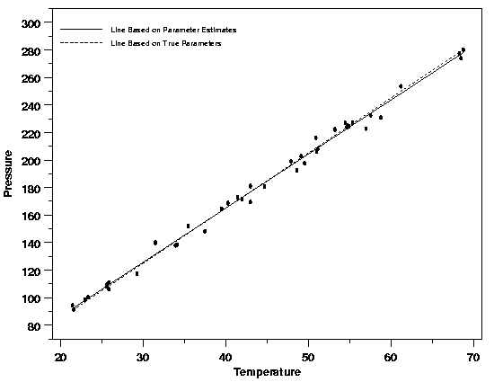

|
4.
Process Modeling
4.4. Data Analysis for Process Modeling 4.4.3. How are estimates of the unknown parameters obtained?
|
|||
| General LS Criterion | In least squares (LS) estimation, the unknown values of the parameters, \(\beta_0, \, \beta_1, \, \ldots \,\), in the regression function, \(f(\vec{x};\vec{\beta})\), are estimated by finding numerical values for the parameters that minimize the sum of the squared deviations between the observed responses and the functional portion of the model. Mathematically, the least (sum of) squares criterion that is minimized to obtain the parameter estimates is $$ Q = \sum_{i=1}^{n} \ [y_i - f(\vec{x}_i;\hat{\vec{\beta}})]^2 $$ As previously noted, \(\beta_0, \, \beta_1, \, \ldots \,\) are treated as the variables in the optimization and the predictor variable values, \(x_1, \, x_2, \, \ldots \,\) are treated as coefficients. To emphasize the fact that the estimates of the parameter values are not the same as the true values of the parameters, the estimates are denoted by \(\hat{\beta}_0, \, \hat{\beta}_1, \, \ldots \,\). For linear models, the least squares minimization is usually done analytically using calculus. For nonlinear models, on the other hand, the minimization must almost always be done using iterative numerical algorithms. | ||
| LS for Straight Line |
To illustrate, consider the straight-line model,
$$ y = \beta_0 + \beta_1x + \varepsilon \, .$$
For this model the least squares estimates of the parameters would be
computed by minimizing
$$ Q = \sum_{i=1}^{n} \ [y_i - (\hat{\beta}_0 + \hat{\beta}_1x_i)]^2 \, .$$
Doing this by
|
||
| These formulas are instructive because they show that the parameter estimators are functions of both the predictor and response variables and that the estimators are not independent of each other unless \(\bar{x} = 0\). This is clear because the formula for the estimator of the intercept depends directly on the value of the estimator of the slope, except when the second term in the formula for \(\hat{\beta}_0\) drops out due to multiplication by zero. This means that if the estimate of the slope deviates a lot from the true slope, then the estimate of the intercept will tend to deviate a lot from its true value too. This lack of independence of the parameter estimators, or more specifically the correlation of the parameter estimators, becomes important when computing the uncertainties of predicted values from the model. Although the formulas discussed in this paragraph only apply to the straight-line model, the relationship between the parameter estimators is analogous for more complicated models, including both statistically linear and statistically nonlinear models. | |||
| Quality of Least Squares Estimates | From the preceding discussion, which focused on how the least squares estimates of the model parameters are computed and on the relationship between the parameter estimates, it is difficult to picture exactly how good the parameter estimates are. They are, in fact, often quite good. The plot below shows the data from the Pressure/Temperature example with the fitted regression line and the true regression line, which is known in this case because the data were simulated. It is clear from the plot that the two lines, the solid one estimated by least squares and the dashed being the true line obtained from the inputs to the simulation, are almost identical over the range of the data. Because the least squares line approximates the true line so well in this case, the least squares line will serve as a useful description of the deterministic portion of the variation in the data, even though it is not a perfect description. While this plot is just one example, the relationship between the estimated and true regression functions shown here is fairly typical. | ||
| Comparison of LS Line and True Line |  | ||
| Quantifying the Quality of the Fit for Real Data | From the plot above it is easy to see that the line based on the least squares estimates of \(\beta_0\) and \(\beta_1\) is a good estimate of the true line for these simulated data. For real data, of course, this type of direct comparison is not possible. Plots comparing the model to the data can, however, provide valuable information on the adequacy and usefulness of the model. In addition, another measure of the average quality of the fit of a regression function to a set of data by least squares can be quantified using the remaining parameter in the model, \(\sigma\), the standard deviation of the error term in the model. | ||
| Like the parameters in the functional part of the model, \(\sigma\) is generally not known, but it can also be estimated from the least squares equations. The formula for the estimate is $$\begin{array}{ccl} \hat{\sigma} & = & \sqrt{\frac{Q}{n-p}} \\ & & \\ & = & \sqrt{\frac{\sum_{i=1}^{n} \ [y_i - f(\vec{x}_i;\hat{\vec{\beta}})]^2}{n-p}} \end{array}$$ with \(n\) denoting the number of observations in the sample and \(p\) is the number of parameters in the functional part of the model. \(\hat{\sigma}\) is often referred to as the "residual standard deviation" of the process. | |||
| Because \(\sigma\) measures how the individual values of the response variable vary with respect to their true values under \(f(\vec{x};\vec{\beta})\), it also contains information about how far from the truth quantities derived from the data, such as the estimated values of the parameters, could be. Knowledge of the approximate value of \(\sigma\) plus the values of the predictor variable values can be combined to provide estimates of the average deviation between the different aspects of the model and the corresponding true values, quantities that can be related to properties of the process generating the data that we would like to know. | |||
| More information on the correlation of the parameter estimators and computing uncertainties for different functions of the estimated regression parameters can be found in Section 5. | |||

{kind=link}